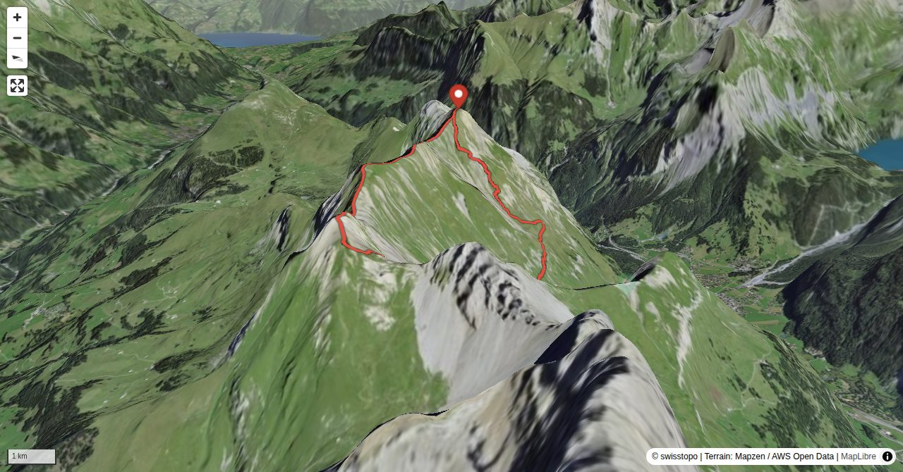

Die Allmenalp oberhalb von Kandersteg ist bekannt für den Klettersteig; der grösste Teil der dort vorzufindenden Bergfreunde begeht den Klettersteig (und schwebt mit der Bahn wieder hinab). Deutlich weniger Besucher erhalten die Aussichtsgipfel Bunderspitz und First oberhalb der Allmenalp, trotz der Tatsache, dass beide per Wanderweg (siehe Varianten) erreichbar sind. Der hier beschriebene Verbindungsgrat zwischen den beiden Gipfeln wird dann nur noch von einem kleinen Kreis von Alpinwandernden begangen. Der Grat ist technisch gesehen zwar nicht sonderlich schwierig (Kletterstellen max. II), erfordert aber aufgrund der stellenweise scharfen Gratkante eine gegen Ausgesetztheit und Tiefblicke resistente Psyche.
Die Aufstiegszeit ist die Zeitangabe für den Aufstieg zum First und der Überschreitung zum Bunderspitz. Vom Bunderspitz zur Allmenalp zurück sind noch 820 m abzusteigen.
Quick Facts
| Summit elevation | 2536 m |
|---|---|
| Difficulty | SAC T6 Difficult alpine hiking close to mountaineering terrain. Guide |
| Trailhead | Allmenalp, Bergstation |
| Distance | 8.3 km (out-and-back) |
| Total ascent | ~865 m |
| Elevation range | 1723-2535 m |
| Route sources | SAC Route Portal |
Photos


Route Map & Elevation
i
i
sac_scale (precise T1–T6) with
swissTLM3D Wanderwegart
fallback where OSM is silent (coarser T2/T3 and T4+ buckets).
Coverage: OSM 66.1% · swisstopo 10.1% · unknown 21.8%.Elevations computed from the inlined GPX track (SwissTopo height API).
Loading forecast…
3D Terrain View

Route Details
Überschreitung zum Bunderspitz (Allmegrat)
- Die Aufstiegszeit ist die Zeitangabe für den Aufstieg zum First und der Überschreitung zum Bunderspitz. Vom Bunderspitz zur Allmenalp zurück sind noch 820 m abzusteigen.
Terrain & safety
Die Gratabschnitte zwischen First und Bunderspitz unterscheiden sich stark in ihrer Charakterisitik: im ersten Drittel eine sehr ausgesetzte Gratschneide (T6), im mittleren Teil ein breiter Grasgrat (T2), im letzten felsigen Drittel sind zwei exponierte Querungen zu verzeichnen (T5+). In der Gegenrichtung (Bunderspitz - First) ist der Grat noch einen Tick anspruchsvoller.
Source: SAC Route Portal
Getting There & Back
Start: Allmenalp, Bergstation (1723 m)
Directions from to Allmenalp, Bergstation
Route returns to Allmenalp, Bergstation.
Cable car to Allmenalp, Bergstation.
Field Reference
| Trailhead | Allmenalp, Bergstation | 46.49230, 7.64980 |
|---|---|---|
| Summit | Bunderspitz (2536 m) | 46.50484, 7.64299 |
Coordinates are WGS84 decimal degrees (lat, lon). Emergency: 112 (general) or 1414 (Rega air rescue). Page URL: